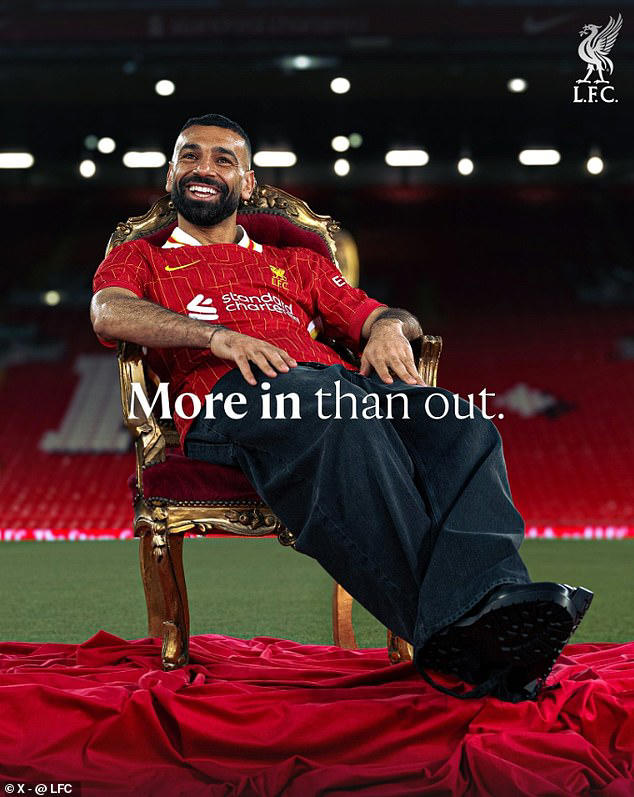
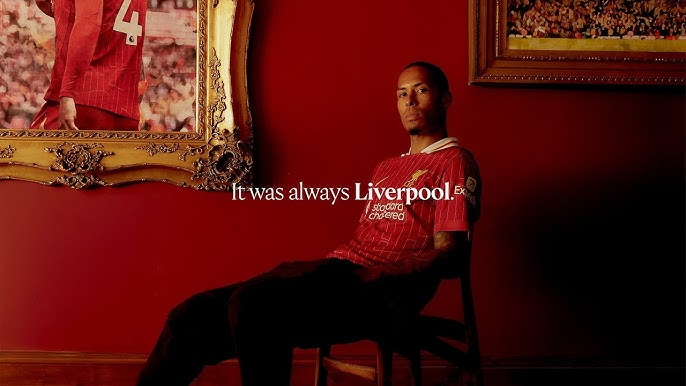

Regendary players Resiging with Salah & Virgil
Regendary players Resiging with Salah & Virgil

Salah: “It’s great, I had my best years here. I played eight years, hopefully it’s going to be 10. Enjoying my life here, enjoying my football. I had the best years in my career.
“I would like to say to [the fans], I am very, very happy to be here. I signed here because I believe we can win a lot of big trophies together. Keep supporting us and we’ll give it our best, and hopefully in the future we’re going to win more trophies.”

Virgil: “I’m very happy, very proud,” Van Dijk told Liverpoolfc.com in exclusive reaction. “There are so many emotions obviously that go through my head right now speaking about it.
“It’s a proud feeling, it’s a feeling of joy. It’s just incredible. The journey I’ve had so far in my career, to be able to extend it with another two years at this club is amazing and I’m so happy.”
“It was always Liverpool. That was the case. It was always in my head, it was always the plan and it was always Liverpool.
“There wasn’t any doubt in my head that this is the place to be for me and my family. I’m one of Liverpool. Someone called me the other day an adopted Scouser – I’m really proud to hear these things, it gives me a great feeling.”